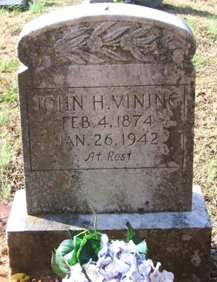
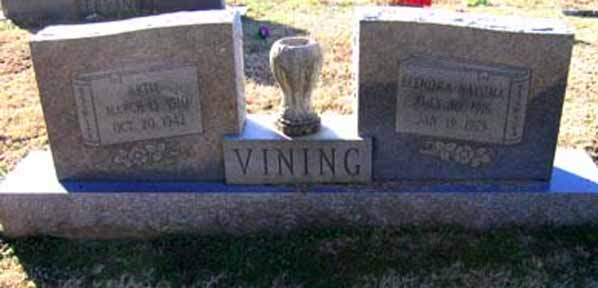

Census Data
| 1920 | 1930 | 1940 | |
| John Henry Vining | 46 | 56 | ? |
| Virgie Lorene (Holt) Vining | 36 | 46 | ? |
| Cephas Andrew Vining | 14 | married and living in separate household | |
| Cecile Ester Vining | 13 | [living? in separate household] | |
| Floyd R. Vining | 11 | living in separate household | |
| Artie Vining | 10 | 20 | ? |
| Allen Vining | 6 | 17 | ? |
| Eunice Vining | [unclear from microfilm] | 14 | ? |
| Odell Vining | 2 y., 5 m. | 12 | ? |
| Evie Vining | 10 | ? |


Death Data
Gravestones for John Henry Vining and gravestone for Virgie Lorene (Holt) Vining, in Reunion Cemetery, Thach, Alabama (Source: Find A Grave):
